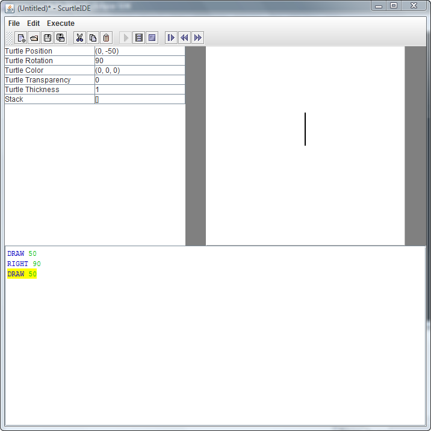

Scurtle
Scurtle is a system for working with Turtle Graphics. Turtle graphics are 2-dimensional line graphics drawn in a relative manner.
Imagine you have a turtle on a canvas, with a paintbrush on his tail. If his tail is up, he is simply moving, and the canvas remains blank. If, however, the turtle has his tail down, he is drawing, and a line is created underneath him as he moves.
The turtle can turn left or right, changing which direction he is facing. When he next moves again, it will be in this new direction. Unlike Cartesian Geometry, where each point is represented by a set of coordinates, lines in turtle geometry are represented by a combination of an angle and a distance, and depend on previous moves.
Cartesian coordinates
Turtle Coordinates
Running Scurtle
Scurtle can be used as a Scala library, allowing the turtle to be controlled directly. There are only a few classes needed to use the Scurtle library:
- Turtle - The turtle itself, contains methods to move, draw, rotate, etc.
- Field - The field on which the turtle moves. This is a Swing component which can be displayed on a panel.
- ScurtleApplication - Base
class for application objects. To create a simple Scurtle app, extend this and define
a
main()method. A turtle is available in theturtlemember variable, and a field is available viafield. Once you are done manipulating the turtle, call field.repaint() to update the display.
Here is a simple Scurtle application which displays a circle:
object Circle
extends ScurtleApplication {
def main(args: Array[String]) {
def circle(radius: Double, numSegments: Int) {
val circum: Double = 2.0d * Math.Pi * radius
turtle.move(radius)
turtle.rotate(90.0d)
for(i <- 0 until numSegments) {
turtle.draw(circum / numSegments.toDouble)
turtle.rotate(360.0d / numSegments.toDouble)
}
}
circle(50, 1000)
field.repaint()
}
}
The more common way is to execute scurtle script files. These scripts are stored in files with a .scurtle extension. They can be run from the commandline using the Scurtle command:
Scurtle examples/horizontalGradient.scurtle
The Scurtle IDE can be used to interactively create scurtle scripts. The IDE can be run by running the ScurtleIde command. The Scurtle IDE is more fully described below.

The Scurtle IDE
The Turtle
This idea of turtle graphics was built into the programming language Logo in the 1960's. It also supported a physical turtle, a small robot to which a pen could be attached, which is how the style got its name.
The turtle in Scala is not a physical one; it lives only inside the Scurtle program. It has the following attributes:
| Attribute | Description |
| pos | The current position of the turtle. The position is stored internally as a
pair of cartesian coordinates. The turtle begins at (0, 0), which is located at
the center of the field. His position is updated automatically as he moves through
the field. This position can also be set directly, but it is not recommended, as
this goes against the turtle programming paradigm. There is no way to set this value through a Scurtle Script. |
| color | The color to be drawn by the turtle during his next move. This defaults to
black, but can be set to any
java.awt.Color
value. This value can be set inside of a Scurtle Script using the COLOR command. |
| thickness | The thickness of the line to be drawn by the turtle. Note that this value is
specified relative to the distance moved by the turtle, not in terms of pixels. This value can be set inside of a Scurtle Script using the THICK command. |
| alpha | The amount of transparency applied to the turtle's lines. A value of 0.0 is
completely transparent, and 1.0 is completely opaque. This value can be set inside of a Scurtle Script using the TRANSPARENT command. |
| rotation | The current angle of rotation, in radians. 0 radians is to the right, and they
move counterclockwise, with 2 * PI being a full rotation. Note that although the rotation is stored internally as radians, most functions such as rotate and point take a value in degrees, with zero degrees being straight up. The current angle in degrees is readable via rotationDegrees. This value can be set inside of a Scurtle Script using the LEFT, RIGHT, and POINT commands. |
| lines | As the turtle draws, its movements are stored as a list of lines. This allows the movements of the turtle to be replayed or examined. |
Scurtle Script Reference
These are the commands available from within Turtle Script
MOVE/DRAW <distance>
Moves the turtle a specified distance in the direction he's facing. If using DRAW, leaves a line; otherwise, simply moves with no visible changes.
LEFT/RIGHT/POINT <degrees>
Changes the turtle's heading. LEFT and RIGHT both move the turtle relative to the direction he currently faces, and POINT points him in a certain direction, regardless of his previous direction.
COLOR <n|+/-n|color>
Changes the color for the next line. The color can be set in one of three ways:
COLOR <n>sets the color to one of nine colors:- Black
- White
- Red
- Orange
- Yellow
- Green
- Cyan
- Blue
- Purple
COLOR <+/-n>addsnto the current color index to choose a new color relative to the existing one.COLOR <name>sets the color to one of the items in the list above using its name according to the list.
TRANSPARENT <n|+/-n>
Changes the amount of transparency in the drawing. Transparency can range from 0 to 100, with 0 being completely opaque and 100 being completely transparent. Transparency can be set to an absolute value by supplying a number, or relative to its current value by prepending a plus or minus sign.
REMEMBER/GOBACK
REMEMBER stores the turtle's current position and direction, and GOBACK returns to the last position. More than one location can be REMEMBER'd; in this case, GOBACK returns to the most recently-remembered position.
REPEAT <iterations>/NEXT
The instructions between the REPEAT and NEXT commands are executed iterations
number of times. REPEAT commands can be nested.
# <label>/GO <label>/RETURN
Provides a way to create functions in turtle script. # labels a location in
the script. GO moves the current instruction to the given label, and RETURN resumes execution
after the GO statement.